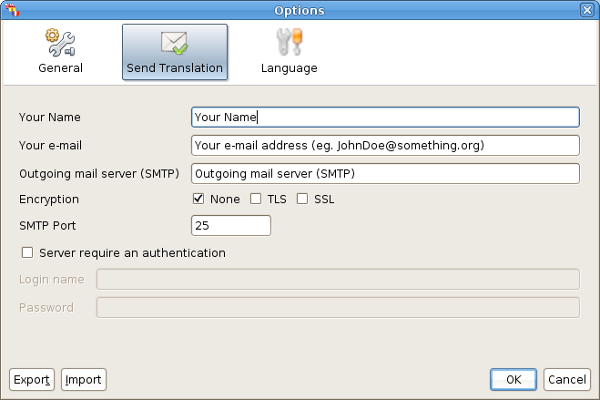

Configuration - Send Translation
Select from the main menu: Tools -> Options.
Once the option dialog is displayed, select the "Send
Translation" Tab.

You have to indicate:
- Your Name and First Name.
- Your email address.
- The SMTP outgoing server address. These are some examples:
- ISP Free: "smtp.free.fr"
- GMail: "gmail.smtp.com". Using Imap, you might have to
write "imap.googlemail.com".
- The connection encryption type. Examples:
- ISP Free: None,
- GMail: SSL.
The SMTP port will change according to the encryption
type (usually 25 for None, 587 for TLS and 465 for SSL), however
if your provider requests a specific port number, fill the SMTP
port field with the one requested. It has been reported to
take port 993 with imap.googlemail.com.
- Does the server need an authentification? if so (for Gmail for
example, it requires an authentification), fullfill the two
fields with the appropriate information.